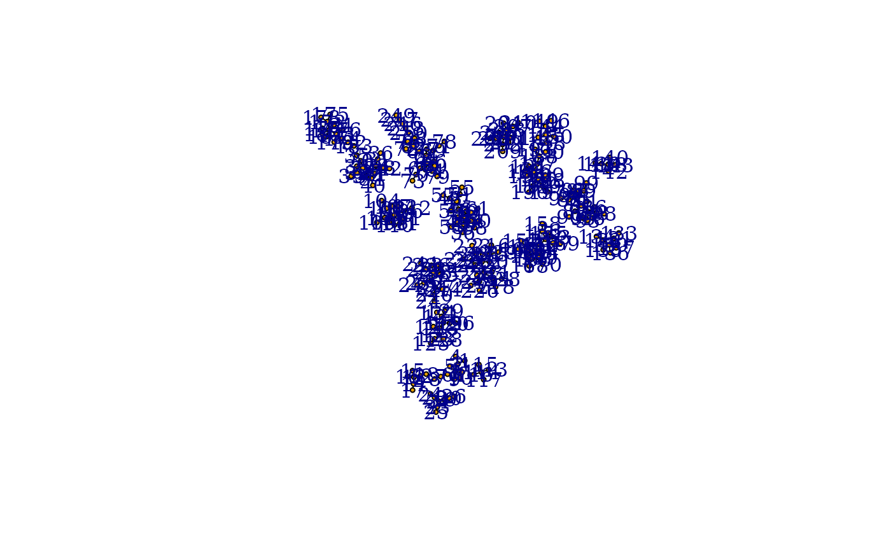

Place several graphs on the same layout
Usage
merge_coords(graphs, layouts, method = "dla")
layout_components(graph, layout = layout_with_kk, ...)Details
merge_coords() takes a list of graphs and a list of coordinates and
places the graphs in a common layout. The method to use is chosen via the
method parameter, although right now only the dla method is
implemented.
The dla method covers the graph with circles. Then it sorts the
graphs based on the number of vertices first and places the largest graph at
the center of the layout. Then the other graphs are placed in decreasing
order via a DLA (diffision limited aggregation) algorithm: the graph is
placed randomly on a circle far away from the center and a random walk is
conducted until the graph walks into the larger graphs already placed or
walks too far from the center of the layout.
The layout_components() function disassembles the graph first into
maximal connected components and calls the supplied layout function
for each component separately. Finally it merges the layouts via calling
merge_coords().
See also
plot.igraph(), tkplot(),
layout(), disjoint_union()
Other graph layouts:
add_layout_(),
component_wise(),
layout_(),
layout_as_bipartite(),
layout_as_star(),
layout_as_tree(),
layout_in_circle(),
layout_nicely(),
layout_on_grid(),
layout_on_sphere(),
layout_randomly(),
layout_with_dh(),
layout_with_fr(),
layout_with_gem(),
layout_with_graphopt(),
layout_with_kk(),
layout_with_lgl(),
layout_with_mds(),
layout_with_sugiyama(),
norm_coords(),
normalize()
Author
Gabor Csardi csardi.gabor@gmail.com
Examples
# create 20 scale-free graphs and place them in a common layout
graphs <- lapply(sample(5:20, 20, replace = TRUE),
barabasi.game,
directed = FALSE
)
layouts <- lapply(graphs, layout_with_kk)
lay <- merge_coords(graphs, layouts)
g <- disjoint_union(graphs)
plot(g, layout = lay, vertex.size = 3, labels = NA, edge.color = "black")
